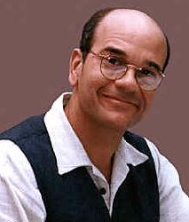

Robert Picardo |
|
||
|  |
Robert Picardo è nato il 27 Ottobre 1953 a Philadelphia, PA, USA.
Uno dei motivi per cui è stato scelto Robert Picardo
per la parte del medico olografico è per il modo in cui l'attore ha recitato il
provino. Quando gli è stato chiesto di dire «I believe someone has failed to
terminate my program», Picardo inaspettatamente ha aggiunto «I'm a doctor, not a
nightlight!»
| The Swarm, Doctor Bashir, I Presume | Lewis Zimmerman |
| Voyager, First Contact | Medico Olografico di Emergenza |
| Alter Ego, One Small Step | Regia |
| Life Line | Storia Lewis Zimmerman |